Maven安装配置
Maven安装配置
下载
百度搜索 maven
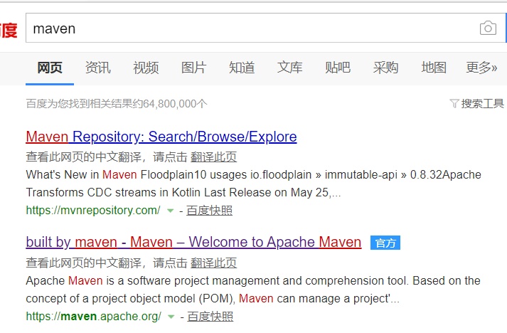
选第二个，第一个是maven仓库
进入maven官网，点击左边的download
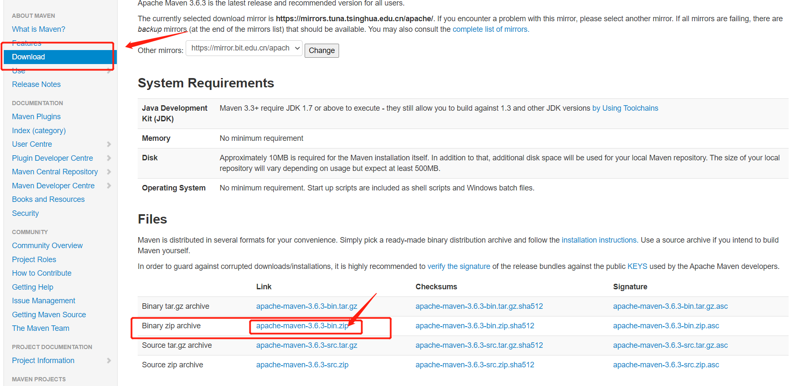
页面拉到下面的Files,选择如图的maven免安装压缩包，点击下载即可
这里下载的是最新版的，如果要下载以前版本的，把页面继续下拉，可以看到Previous Releases，可以在下面下载以前版本的
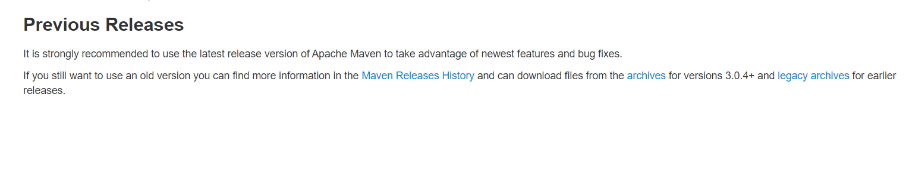
浏览器输入
https://maven.apache.org/，下载步骤同上
解压安装
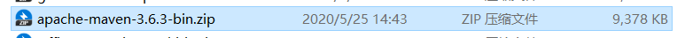
预览文件，没有多余的下级目录
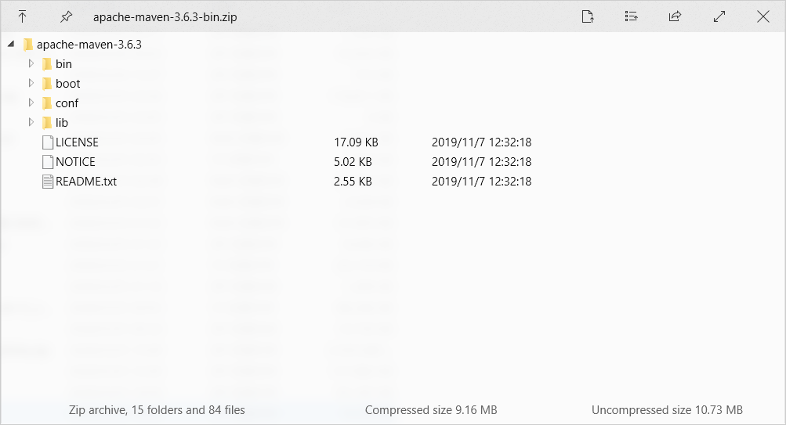
解压到一个想要安装的路径下,我选择的是
D:\Programs\apache-maven-3.6.3
环境变量配置
在系统或者用户环境变量中新建一个
MAVEN_HOME的环境变量，变量值就是解压的MAVEN路径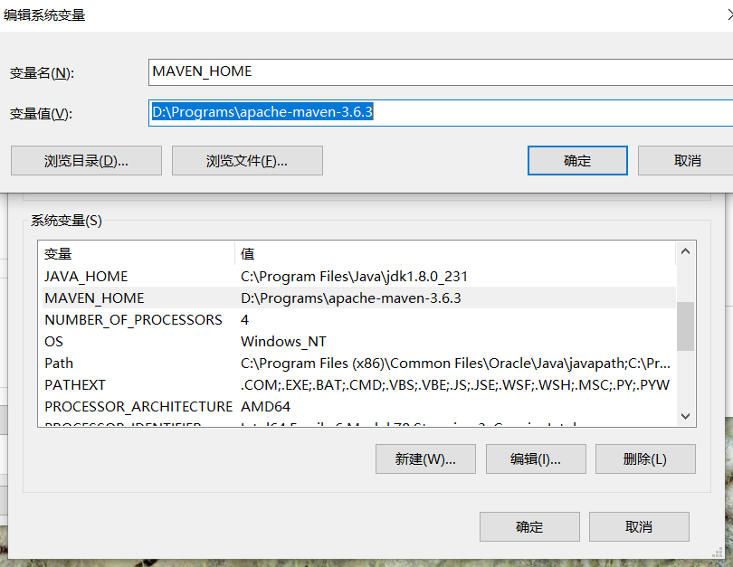
- 然后在Path里添加
%MAVEN_HOME%\bin
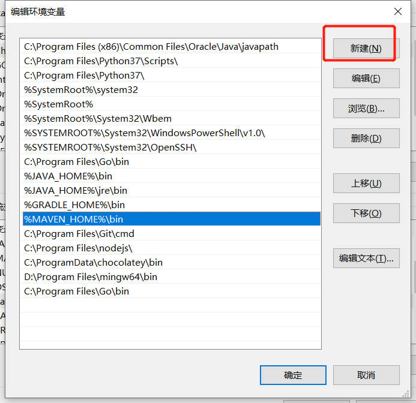
- 然后在Path里添加
如图所示，环境变量配置完毕
验证
打开cmd ,输入
mvn -v出现如下界面即为配置成功
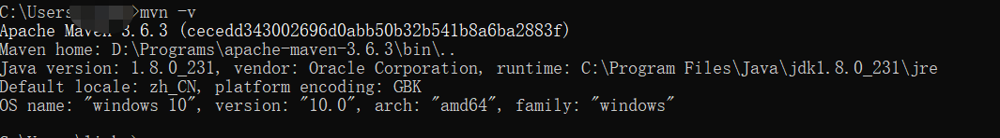
maven配置文件配置
进入到maven安装目录

进入
conf目录，即D:\Programs\apache-maven-3.6.3\conf,打开编辑setting.xml文件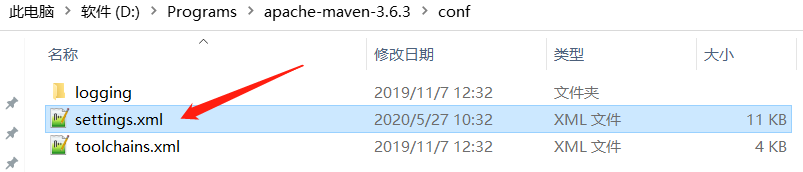
这个文件也就是我们在idea中配置maven覆盖的那个配置文件
添加如下几个配置项
搜索
localRepository，添加本地仓库路径1
<localRepository>D:\repository</localRepository>
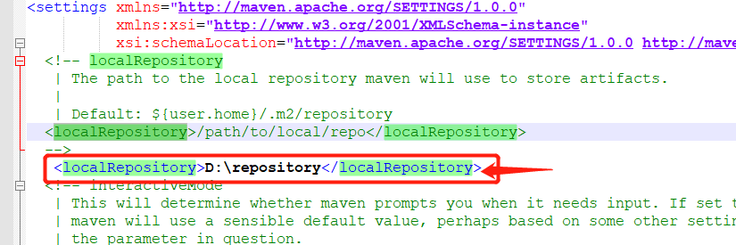
搜索
mirrors,添加中央仓库下载地址镜像1
2
3
4
5
6<mirror>
<id>alimaven</id>
<name>aliyun maven</name>
<url>http://maven.aliyun.com/nexus/content/groups/public/</url>
<mirrorOf>central</mirrorOf>
</mirror>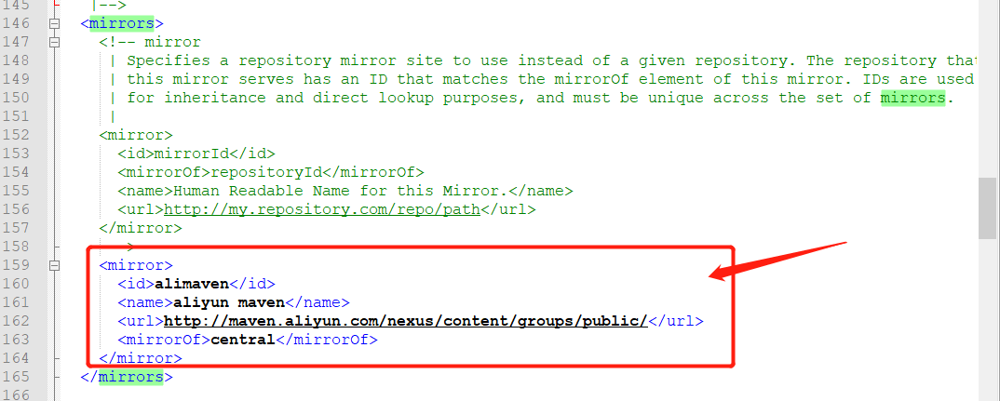
搜索
profiles,添加maven的jdk环境1
2
3
4
5
6
7
8
9
10
11<profile>
<id>jdk-1.8</id>
<activation>
<activeByDefault>true</activeByDefault>
<jdk>1.8</jdk>
</activation>
<properties>
<maven.compiler.source>1.8</maven.compiler.source>
<maven.compiler.target>1.8</maven.compiler.target> <maven.compiler.compilerVersion>1.8</maven.compiler.compilerVersion>
</properties>
</profile>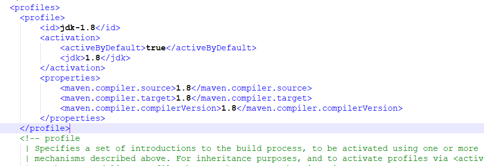
-------------本文结束感谢您的阅读-------------